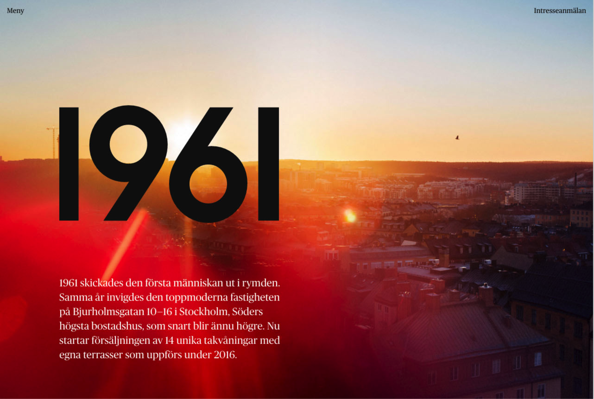

Lab 14: Typography II
Big Ideas
This lab is to replicate another, more complicated website. This lab is essentially lab 13, but harder.
challenges
There were some challenges here, but because of lab 13, we were more prepared.
results
Here are the results of my code.
